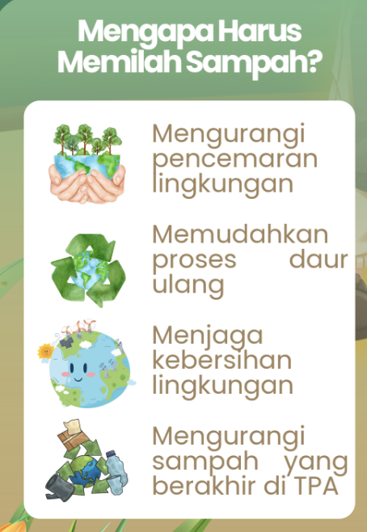
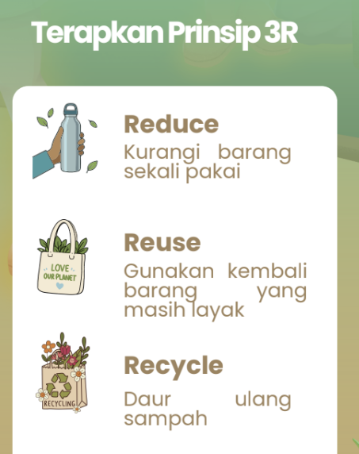
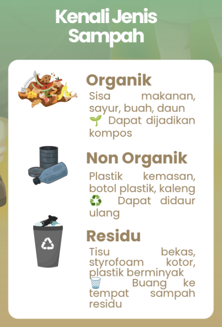
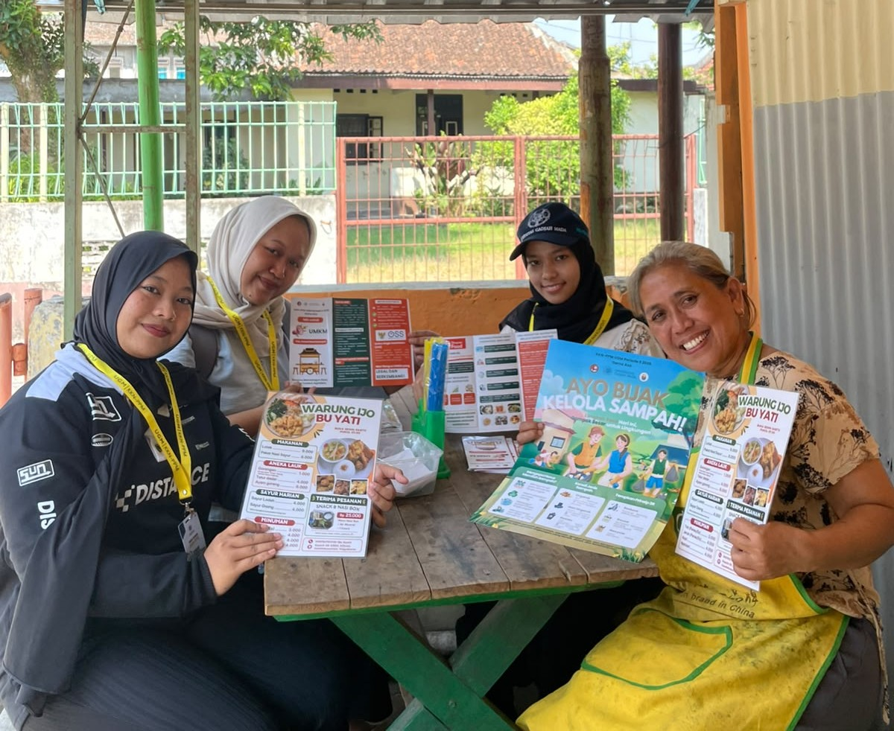

Poster Edukasi
Bijak Kelola Sampah UMKM
Poster edukasi yang berisi informasi mengenai pemilahan dan pengelolaan sampah bagi pelaku UMKM. Poster disusun secara informatif dan menarik untuk dipasang di tempat usaha sebagai media edukasi yang dapat dibaca oleh pelaku UMKM maupun masyarakat umum, sehingga dapat mendorong penerapan pengelolaan sampah yang lebih bijak dan berkelanjutan.

Dokumentasi

zoom_in

zoom_in

zoom_in

zoom_in